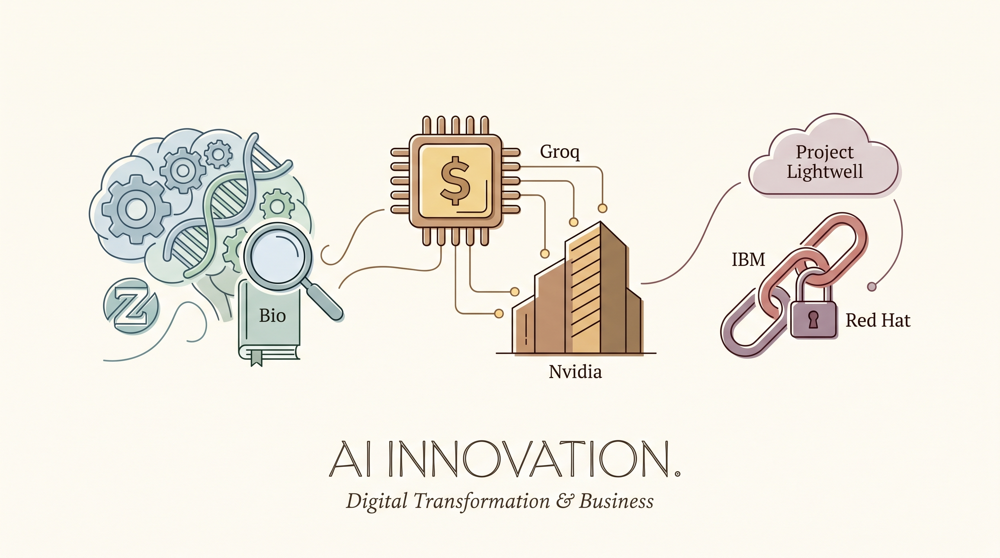

Meta发布ESMFold2开源蛋白质预测模型，在预测10亿种蛋白质结构上超越Google的AlphaFold，标志着Meta在生命科学AI领域取得重大突破。
两克伴AIGC日报
2026-05-30 星期六

本期关注：生物学领域重大变革：扎克伯格新开源模型超越谷歌AlphaFold、继Nvidia 200亿美元"非收购式招聘"之后，AI芯片初创公司Groq据报道正融资6.5亿美元 - TechCrunch、IBM和Red Hat承诺投入50亿美元通过"Project Lightwell"项目保护开源供应链 - SecurityWeek、我从零开始用8GB数据训练了一个大语言模型，我很开心。
📰 行业动态
AI芯片初创公司Groq正寻求融资6.5亿美元，以扩大其自研AI芯片推理云业务，此前已与NVIDIA达成2亿美元的非收购合作协议。
IBM与Red Hat联合宣布5亿美元投资计划，启动Project Lightwell项目，旨在通过AI技术保障开源软件供应链安全。
🔥 今日焦点
本地跑大模型不再是极客专利了。有位开发者最近分享了自己用8GB显存从零训练LLM的经历——没错，就是那张「小显存」显卡，结果还真让他练出了能跑通的模型。他把代码扔到了GitHub上，算是给社区做了个接地气的示范。说实话，大模型训练这几年一直被「大厂专利」的形象笼罩，动不动就提千卡集群、万亿参数，但这位老哥的尝试说明了一个朴素的道理：很多事儿，技术上没那么高不可攀，就是个敢不敢动手的问题。当然，8GB能训出什么水平的模型、能不能用在正经场景上，这些还得实际跑跑看——但光是这个探索本身，就挺有意思的。开源社区的魅力就在这儿：大厂有大厂的玩法，普通人有普通人的玩法，大家都在摸这片水域的边界。
---
Google放出了一组Gemini Omni和Gemini 3.5的演示视频，虽然没有长篇大论的技术博客，但光看视频本身就已经挺有说服力了。Omni作为Gemini的多模态能力集大成者，在演示里能看出一些实打实的场景理解能力——不是那种demo舞台上精心准备的成功案例，而是更接近真实使用的效果展示。3.5版本则延续了Gemini系列一贯的高效率路线，在保持能力的同时把响应速度和控制成本压了下去。这几年看下来，Google在Gemini这条线上确实是认真的，从最初的对标GPT-3.5，到后来居上的Gemini 2.5 Pro，再到现在的Omni和3.5，迭代速度和技术密度都算得上是第一梯队了。
📚 深度长文
在人工智能从实验室走向真实场景的浪潮中，University of Waterloo 的 Futures Lab 通过一系列落地原型展示了技术转化的新路径。文章聚焦于学生团队研发的 AI 原型，其中最具代表性的是手语教学 Tutor——结合计算机视觉、自然语言处理和生成式模型，实现手势实时识别、语义交互以及个性化学习路径的闭环。手语 Tutor 不仅帮助听障学习者突破语言壁垒，也为 AI 辅助教学提供了可复制的交互范式，体现了以包容性为核心的设计理念。除此之外，实验室还展示了面向职场的 AI 协作平台、智能辅导系统等创新项目，均通过真实用户测试验证了技术可行性并收集了大量交互数据。核心观点指出，AI 原型的快速迭代与跨学科协作是推动教育与工作方式变革的关键引擎，而 Futures Lab 的实践为高校创新生态提供了可参考的研发流程和开源资源。对 AI 从业者而言，本文提供了原型设计、用户验证及伦理考量的实战案例，以及如何在真实场景中平衡技术性能与社会价值的思考框架，极具阅读价值。
---
标题的中文简介：解锁锂资源与控制埃博拉——深度技术洞察
本篇《下载》聚焦两项前沿议题。首先，作者解析了一种新型锂提取技术，该技术通过直接在硬岩或盐湖卤水中使用选择性吸附剂和电化学工艺，实现高效、低耗的锂回收。相比传统蒸发池工艺，新方法可将用水量削减90%以上，提取时间从数月压缩至数天，从而显著降低生产成本与碳排放。文中引用了多个中试项目数据，显示每吨锂的能源消耗下降约30%，并有望在全球范围内释放诸如美国西部、内蒙古等地的潜在储量，改变目前锂供应链高度集中于南美的格局。作者进一步指出，这一技术突破将为电动汽车产业提供更稳定、环保的原材料支撑，同时对能源转型中的资源安全产生深远影响。
🐦 Ta们说
> "Nobody knows for sure where employment is going and over what time frame. But one thing I can tell you for sure is that the big AI CEO’s have started lying about it.
When they tell you know “we are just here to augment humans, not replace them”, they are saying what they want you to hear for PR, not what they actually believe or hope.
> "Most people know Hugging Face from its public models and datasets but few realize that 50% of the models and datasets stored on HF are private.
This number has been increasing with buckets (our S3 alternative for AI) and enable companies to build AI more efficiently and collaboratively within their organizations, even when they don't share publicly!
> "The "we will upgrade the dependencies later" excuse just died. When AI makes library upgrades nearly free, staying current stops being a luxury and becomes the default. Tech debt was always a tooling problem and now it’s a thing of the past.
https://t.co/xRBd6WB7N5"
🛠️ 产品推荐
ClawChat是一款面向多智能体AI系统的端到端加密协调平台，旨在为AI agent之间的安全通信与协作提供基础设施级解决方案。
该平台支持多个AI智能体在加密环境下进行任务分配、信息共享和协同决策，有效解决了多智能体系统中数据隐私和通信安全的关键挑战。通过采用端到端加密技术，ClawChat确保AI agent之间传递的敏感信息在整个交互过程中均处于加密状态，防止未授权访问和数据泄露风险。
这是一款AI模型能力蒸馏工具，旨在帮助用户通过Claude Code观察和分析AI工作流程，自动提取关键知识和操作模式，进而训练出能够替代部分Claude Code功能的轻量化模型或工作流程。
产品核心价值在于解决企业对AI依赖过重的痛点。通过系统性地记录、分解Claude Code在各类任务中的决策路径和执行策略，用户可以识别出可复用的最佳实践，并将其迁移到成本更低或更可控的AI系统中。这不仅有助于降低对单一AI服务的依赖，还能根据自身业务需求定制化训练专属的AI工作助手。